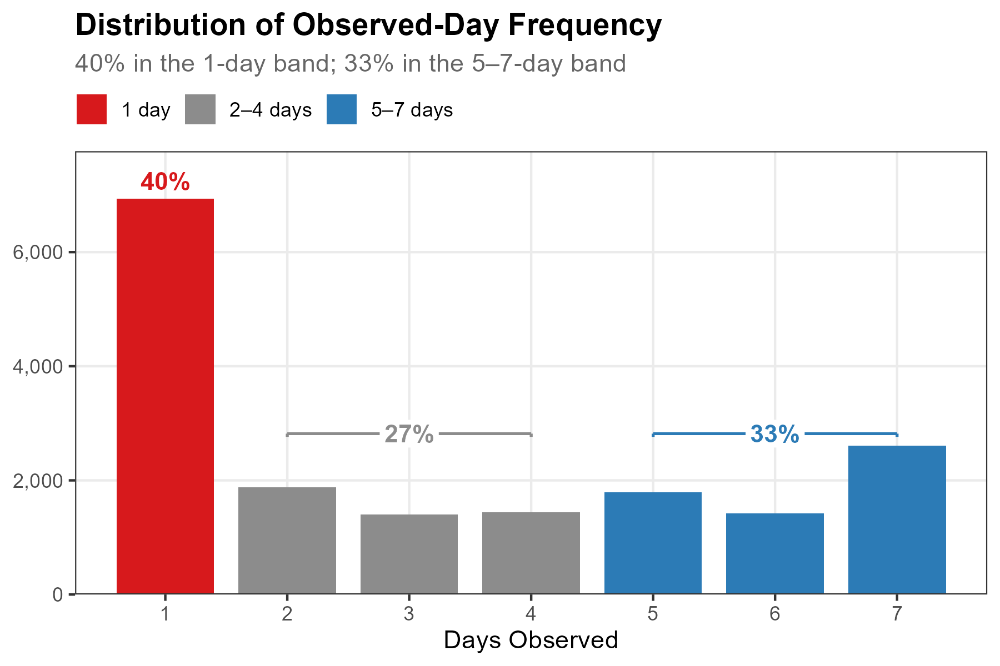
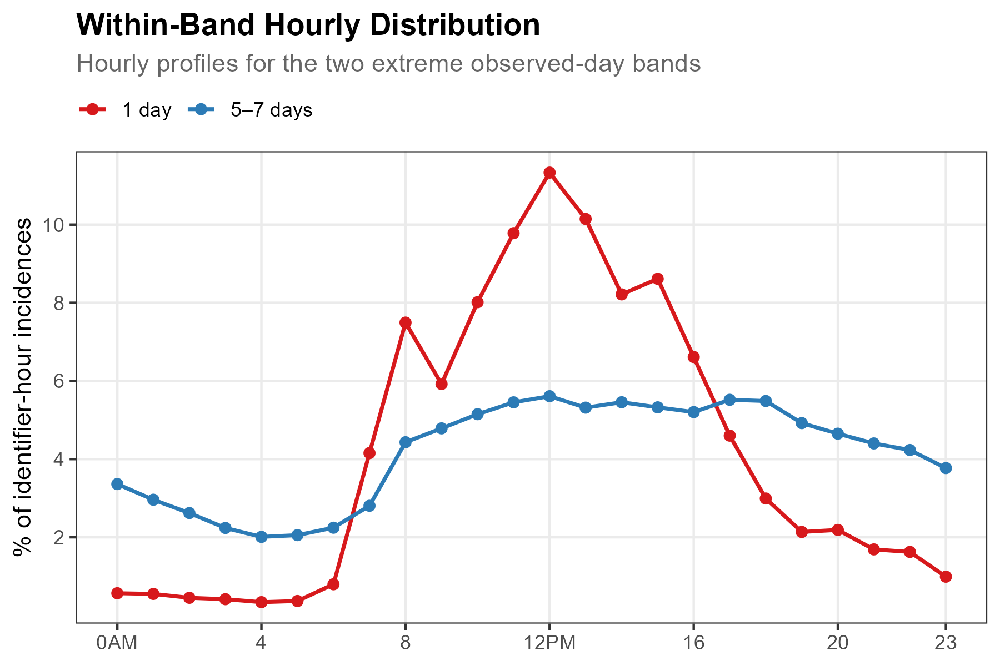
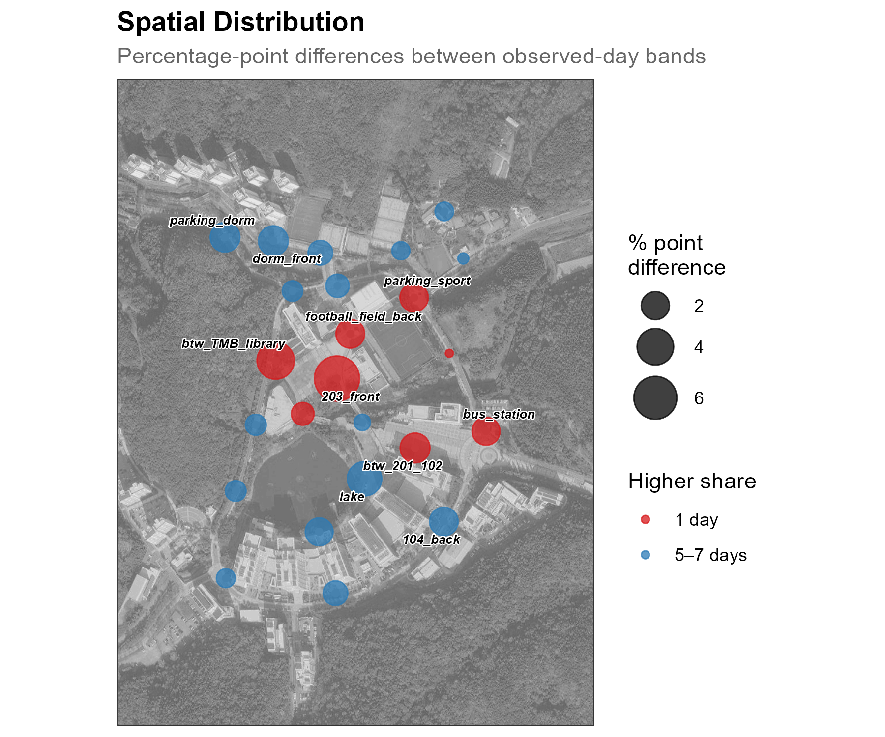
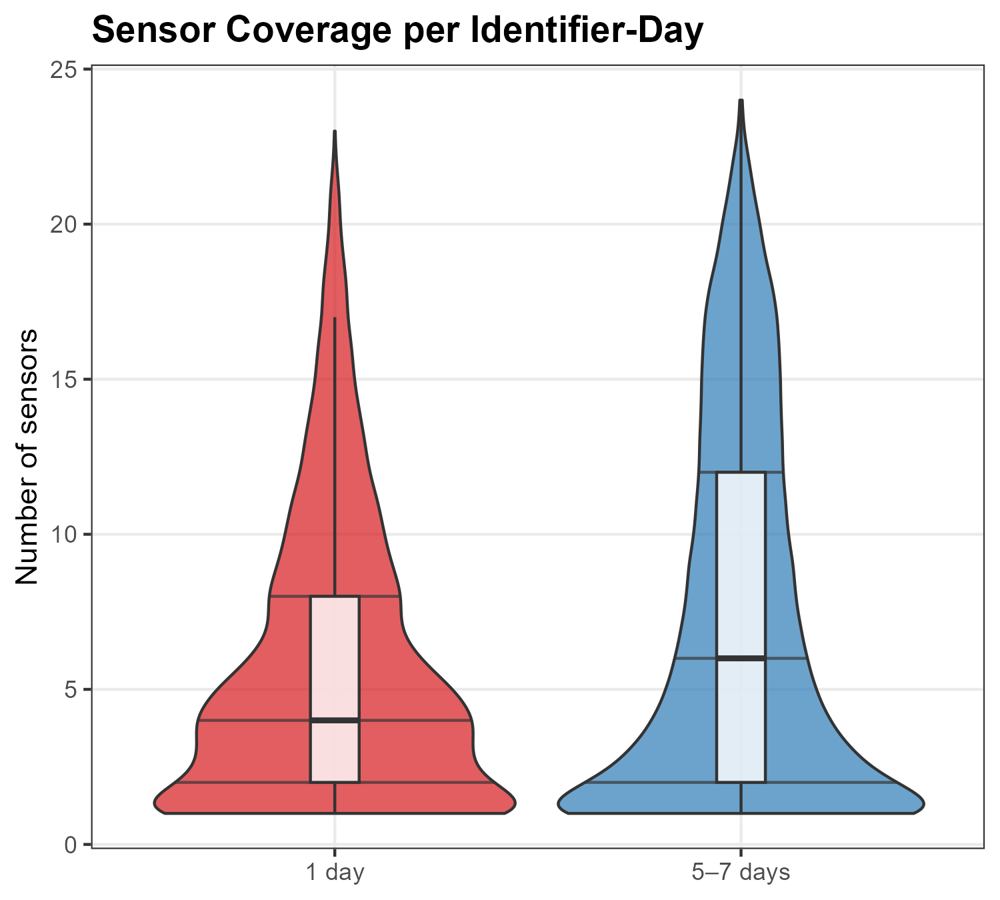
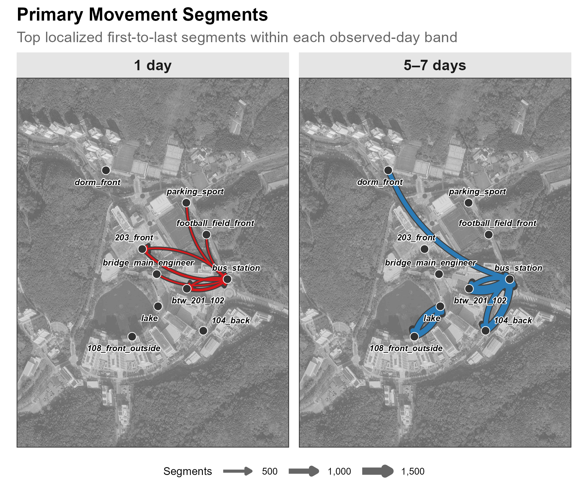

pacman::p_load(tidyverse, lubridate, arrow, sf, ggmap, ggrepel)11 Revisits
While Track reconstructs sensor-level trajectories, Revisits summarizes how often each retained identifier appears across observation days. It is an observed-frequency metric: it does not identify a person, establish residence, or prove that an identifier represents one physical device beyond the pseudonym-stability boundary of the dataset.
This metric was formerly termed identity, following Teixeira et al.’s human-sensing taxonomy. We use Revisits to reflect the metric’s narrower analytical scope: repeated observation of a pseudonymous identifier, not personal identification.
The tutorial groups identifiers into three descriptive bands—1 day, 2–4 days, and 5–7 days—then compares observable temporal, spatial, coverage, and segment-endpoint patterns. These labels describe this seven-day deployment only; they are not demographic or behavioral classes.
ImportantReport the observation-day rule
In this campus tutorial, an observation day is any date with at least one retained detection row for an identifier. The commercial-street demonstration in Case Study instead counts dates with at least one quality-filtered trajectory. Those denominators answer related but non-interchangeable questions, so every analysis should state its eligibility rule and deployment window.
11.1 Setup
Prepare data
Download our sample dataset to follow along, or use your own WiFi detection data: sample_main.zip. The ZIP contains three files: wifi.parquet (WiFi detections), sensors.gpkg (sensor locations), and poi.gpkg (campus landmarks). Extract the ZIP into a working folder named sample_main before running the code below. The sample is a one-week filter of the released campus dataset, with the same pseudonyms and schema, so anything observed here can be followed into the full data. Timestamps are stored in UTC as in the release; the load step converts them once to Asia/Seoul so dates and hours follow the local calendar.
NoteAbout the sample dataset
This chapter uses the same UNIST campus dataset introduced in Count: see that chapter for the period, sensor coverage, schema, and preparation steps.
Load packages and data
Load required packages using pacman::p_load(), which installs any missing packages automatically:
Load the data files:
sample_dir <- "sample_main" # folder containing the extracted ZIP
wifi <- read_parquet(file.path(sample_dir, "wifi.parquet")) |>
mutate(
timestamp = with_tz(timestamp, "Asia/Seoul"),
date = as_date(timestamp),
hour = hour(timestamp)
)
sensors <- st_read(file.path(sample_dir, "sensors.gpkg"), quiet = TRUE)
TipPreview loaded data
head(wifi, 3) timestamp source_address sensor_name rssi_median rssi_sum detections date hour
1 2019-10-28 00:00:00 058d412bd4c8729dfad1d924006c7e06 108_front_outside -69 -69 1 2019-10-28 0
2 2019-10-28 00:00:00 058d412bd4c8729dfad1d924006c7e06 bridge_main_engineer -73 -73 1 2019-10-28 0
3 2019-10-28 00:00:00 1063540d3c6c1dd7492972f2d16a2760 203_front -64 -64 1 2019-10-28 0timestamp: Start of 20-second aggregation windowsource_address: 32-character lowercase release- and dataset-specific HMAC-SHA-256 pseudonym; values match the released campus dataset, so sample observations can be followed into the full datasensor_name: Sensor that retained the aggregated observationdate: Date extracted from timestamphour: Hour of day (0–23)
11.2 Classify by Observed-Day Frequency
The public release retains eligible probe-request observations after the study’s filtering and pseudonymization steps. For each retained identifier, we count the number of distinct dates represented in the seven-day dataset.
Classify retained identifiers
Of 17,483 retained identifiers, 6,936 (39.7%) appear on 1 day, 4,726 (27.0%) on 2–4 days, and 5,821 (33.3%) on 5–7 days. We join these descriptive bands back to the detection rows.
high_frequency_threshold <- 5
identifier_days <- wifi |>
group_by(source_address) |>
summarise(n_days = n_distinct(date), .groups = "drop") |>
mutate(observed_day_band = factor(
case_when(
n_days == 1 ~ "1 day",
n_days >= high_frequency_threshold ~ "5–7 days",
TRUE ~ "2–4 days"
),
levels = c("1 day", "2–4 days", "5–7 days")
))
wifi <- wifi |>
left_join(identifier_days |> select(source_address, observed_day_band),
by = "source_address")
identifier_days |> count(observed_day_band, sort = TRUE)# A tibble: 3 x 2
observed_day_band n
<fct> <int>
1 1 day 6936
2 5–7 days 5821
3 2–4 days 4726
NoteShow code
dist_data <- count(identifier_days, n_days, observed_day_band)
ggplot(dist_data, aes(n_days, n, fill = observed_day_band)) +
geom_col(width = 0.8) +
scale_fill_manual(
values = c("1 day" = "#d7191c", "2–4 days" = "gray55",
"5–7 days" = "#2c7bb6"),
name = NULL) +
scale_x_continuous(breaks = seq(1, 7)) +
scale_y_continuous(labels = scales::comma, expand = expansion(mult = c(0, 0.12))) +
labs(title = "Distribution of Observed-Day Frequency",
x = "Days Observed", y = NULL) +
theme_bw()The 7-day bar contains 2,610 retained identifiers. This establishes repeated observation across the full window, but it does not by itself establish residence, purpose, or the number of people represented.
The following sections compare the two extreme bands—1 day and 5–7 days—across four observable dimensions.
11.3 Observed Pattern Differences
Temporal profile
The 1-day band has a more concentrated daytime profile, whereas the 5–7-day band is distributed more evenly across the 24-hour cycle. Here each hourly value is the number of distinct identifiers observed in that hour divided by the sum of those 24 hourly counts within the band. Because an identifier can appear in several hours, the denominator is identifier-hour incidences, not the number of identifiers.

NoteShow code
wifi_freq <- wifi |>
filter(observed_day_band %in% c("1 day", "5–7 days"))
h_freq <- wifi_freq |>
group_by(observed_day_band, hour) |>
summarise(n = n_distinct(source_address), .groups = "drop") |>
group_by(observed_day_band) |>
mutate(pct = n / sum(n) * 100)
ggplot(h_freq, aes(hour, pct, color = observed_day_band)) +
geom_line(linewidth = 0.8) + geom_point(size = 1.8) +
scale_x_continuous(breaks = c(0, 4, 8, 12, 16, 20, 23),
labels = c("0AM", "4", "8", "12PM", "16", "20", "23")) +
scale_y_continuous(breaks = seq(2, 10, 2)) +
scale_color_manual(values = c("1 day" = "#d7191c", "5–7 days" = "#2c7bb6"),
name = NULL) +
labs(title = "Within-Band Hourly Distribution",
x = NULL, y = "% of identifier-hour incidences") +
theme_bw()
NoteReading the temporal profile
The two curves cross at approximately 7 AM and 5 PM. Between those times, a larger share of the 1-day band’s identifier-hour incidences occurs; outside them, the 5–7-day band has the larger within-band share.
Descriptive observations include:
- Morning increase: the 1-day band rises from under 1% at 5 AM to about 7.5% at 8 AM
- Midday peak: the 1-day band reaches about 11.3% at noon
- Evening contrast: the 1-day share falls after 5 PM, while the 5–7-day profile remains flatter
- Overnight observations: the 5–7-day band retains a non-zero share between 2 AM and 4 AM
These patterns are compatible with several site processes, but the WiFi data alone do not identify the people, purposes, or activities that produced them.
Spatial pattern
For each band, we calculate every sensor’s share of detection rows, then map the percentage-point difference. The 1-day band has larger row shares at 203_front (+6.7 pp), btw_TMB_library (+4.2 pp), and btw_201_102 (+2.3 pp). The 5–7-day band has larger shares at lake (+3.4 pp), dorm_front and parking_dorm (+2.3 pp each), and 104_back (+2.1 pp). These are associations between observation-frequency bands and sensor-level row distributions, not evidence of visitor type or land-use function.

NoteShow code
s_freq_wide <- wifi_freq |>
count(observed_day_band, sensor_name) |>
group_by(observed_day_band) |>
mutate(pct = n / sum(n) * 100) |>
ungroup() |>
select(observed_day_band, sensor_name, pct) |>
pivot_wider(names_from = observed_day_band, values_from = pct,
values_fill = 0) |>
rename(pct_one_day = `1 day`, pct_five_to_seven_days = `5–7 days`) |>
mutate(diff = pct_one_day - pct_five_to_seven_days,
abs_diff = abs(diff),
dominant = if_else(diff > 0, "1 day", "5–7 days")) |>
left_join(sensor_coords, by = "sensor_name")
ggmap(base_map, darken = c(0.3, "white")) +
geom_point(data = sensor_coords, aes(x = X, y = Y),
size = 1.2, color = "grey60", inherit.aes = FALSE) +
geom_point(data = s_freq_wide, aes(x = X, y = Y, size = abs_diff, color = dominant),
alpha = 0.75, inherit.aes = FALSE) +
scale_size_continuous(range = c(1.5, 10), name = "% point\ndifference") +
scale_color_manual(values = c("1 day" = "#d7191c", "5–7 days" = "#2c7bb6"),
name = "Higher share") +
labs(title = "Spatial Distribution") +
theme_bw()Spatial coverage
For each identifier-day, we count the number of distinct sensors represented. The 5–7-day band has a median of 6 sensors per identifier-day and a broader distribution; the 1-day band has a median of 4. This measure describes sensor-network coverage among retained rows. It does not by itself measure distance travelled, campus engagement, or a complete visit.

NoteShow code
identifier_day_stats <- wifi_freq |>
group_by(source_address, date, observed_day_band) |>
summarise(n_sensors = n_distinct(sensor_name), .groups = "drop")
ggplot(identifier_day_stats,
aes(x = observed_day_band, y = n_sensors, fill = observed_day_band)) +
geom_violin(alpha = 0.7, draw_quantiles = c(0.25, 0.5, 0.75)) +
geom_boxplot(width = 0.12, fill = "white", alpha = 0.8, outlier.shape = NA) +
scale_fill_manual(values = c("1 day" = "#d7191c", "5–7 days" = "#2c7bb6")) +
scale_y_continuous(breaks = seq(0, 25, 5)) +
labs(title = "Sensor Coverage per Identifier-Day",
x = NULL, y = "Number of sensors") +
theme_bw() +
theme(legend.position = "none")Segment endpoints
To make endpoint comparisons deterministic, we first localize each identifier-window to the sensor with the largest strength_sum, breaking ties by sensor_name. We then split each identifier’s sequence whenever the gap exceeds 30 minutes and count the first-to-last sensor pairs of segments with at least two localized windows and different endpoints.
These counts summarize 30-minute-gap segments, not independently validated trips, visits, or travel purposes. They also use only the two extreme observed-day bands, so they are not directly comparable to the all-identifier totals in Track.

NoteShow code
wifi_freq_localized <- wifi_freq |>
mutate(strength_sum = 100 * detections + rssi_sum) |>
arrange(source_address, timestamp, desc(strength_sum), sensor_name) |>
distinct(source_address, timestamp, .keep_all = TRUE)
od_freq <- wifi_freq_localized |>
arrange(source_address, timestamp) |>
group_by(source_address) |>
mutate(gap = as.numeric(difftime(timestamp, lag(timestamp), units = "mins")),
segment_id = cumsum(is.na(gap) | gap > 30)) |>
group_by(source_address, segment_id, observed_day_band) |>
summarise(origin = first(sensor_name), destination = last(sensor_name),
n_det = n(), .groups = "drop") |>
filter(origin != destination, n_det >= 2) |>
count(observed_day_band, origin, destination, name = "n_segments") |>
group_by(observed_day_band) |>
slice_max(n_segments, n = 7) |>
ungroup()
# Join coordinates and plot as flow map with geom_curve
edges_freq <- od_freq |>
left_join(sensor_coords, by = c("origin" = "sensor_name")) |>
rename(x_from = X, y_from = Y) |>
left_join(sensor_coords, by = c("destination" = "sensor_name")) |>
rename(x_to = X, y_to = Y)
# Pre-scale widths: a grey casing under each colored flow keeps it legible
# on the satellite basemap, and the identity linewidth scale keeps the legend in
# real segment counts (see the flow map notes in the Track chapter)
edges_freq <- edges_freq |>
mutate(w_main = scales::rescale(n_segments, to = c(0.5, 3)),
w_out = w_main + 0.7)
ggmap(base_map, darken = c(0.3, "white")) +
geom_curve(data = edges_freq,
aes(x = x_from, y = y_from, xend = x_to, yend = y_to,
linewidth = w_out),
curvature = 0.25, color = "grey25",
arrow = arrow(length = unit(2, "mm"), type = "closed"),
inherit.aes = FALSE, show.legend = FALSE) +
geom_curve(data = edges_freq,
aes(x = x_from, y = y_from, xend = x_to, yend = y_to,
linewidth = w_main, color = observed_day_band),
curvature = 0.25,
arrow = arrow(length = unit(1.5, "mm"), type = "closed"),
inherit.aes = FALSE) +
scale_linewidth_identity(
name = "Segments",
breaks = scales::rescale(c(1000, 2000),
from = range(edges_freq$n_segments), to = c(0.5, 3)),
labels = scales::comma(c(1000, 2000)),
guide = guide_legend(override.aes = list(color = "grey40"))) +
scale_color_manual(values = c("1 day" = "#d7191c", "5–7 days" = "#2c7bb6"),
guide = "none") +
facet_wrap(~ observed_day_band) +
labs(title = "Primary Movement Segments") +
theme_bw() +
theme(legend.position = "bottom")11.4 Observed-day bands as a revisit profile
The two extreme bands differ descriptively across the four views shown here: within-band hourly distributions, sensor-level detection-row shares, distinct-sensor counts per identifier-day, and localized segment endpoints. Together, these views form a deployment-specific revisit profile. They do not convert identifiers into people or establish why the patterns differ.
Observed-day frequency is useful because it is transparent and reproducible from the retained dataset. Its interpretation remains bounded by address randomization, filtering, sensor coverage, pseudonym stability, and the observation-day eligibility rule.
NoteChoosing the threshold
The upper band begins at 5 of 7 observed days. This is a descriptive cut point, not an attendance or residency threshold. Moving it to 4 days would change group sizes and every downstream comparison. The exact banding should therefore be justified for the deployment context and tested for sensitivity:
- Short deployments (1–2 weeks): report both the count and proportion of eligible observation days
- Long deployments (1+ month): consider rolling windows or absolute day counts and show sensitivity to the window
- Event studies: distinguish event and non-event periods when that contrast is part of the design
Always report the full day-count distribution alongside any bands so readers can see what the threshold compresses.